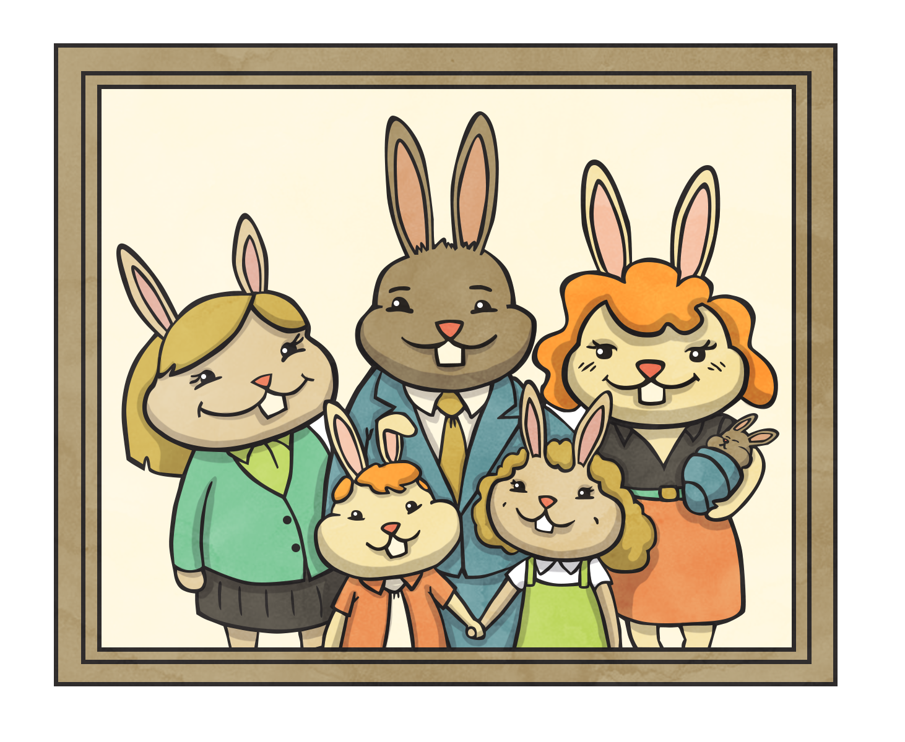

Recursion is an important part of this text for one major reason. Other data structures utilize recursion to solive their problems.
Perhaps you've run into an example of "stack level too deep" before. The base case is the section that tells our program to stop.
The counter to our base case. If the base case is not met, we run this side of the function.
Let's look at a simple counter program. It will count down from a number to 0.
function countdown(n) {
if (n < 0) {
return undefined
} else {
console.log(n)
return countdown(n-1)
}
}
Versus the same iterative solution
function countdown(n) {
for (var i = n; i >= 0; i--) {
console.log(i)
}
}
Our base case is if (n < 0). This is telling our program to stop when our condition is met. If it is absent, we will infinitely loop, counting down forever.
The recursive case did something, then returned a smaller version of the exact same program.
The goal of a recursive function is to continually call itself with a smaller and smaller problem until we meet our base case.
In the recursive case, you'll notice we're not returning a value but instead, an entirely newly invoked function. By this, we can assume that recursive functions do take up more memory than an iterative one. In addition, we can also trace the call stack, the order of functions called as until we get to a base case, none of these called functions returns.
Let's use a classic Fibonacci recursive function as an example. The fibonacci sequence is:
n | 1 2 3 4 5
-----------------------
value | 1 1 2 3 5
And the code:
// abbreviated "fibonacci" to "fib"
function fib(n) {
if (n < 2) {
return n
} else {
return fib(n-1) + fib(n-2)
}
}
Lets trace fib(5). We know it should return 5.
fib(5)
/ \
fib(4) fib(3)
/ \ | \
fib(3) fib(2) fib(2) fib(1)
/ \ [1] [1] [1]
fib(2) fib(1)
[1] [1]
We can see the Tree structure that is created and see the 1's returned, 5 of them.
Technically, we haven't returned a value until each branch gets all the way to its base case. The values of each function then "bubble up" back to the orginal call of fib(5).
Recursion was needed a lot more in languages and frameworks that did not have proper loops as we know them today. It is still used in a variety of fields such as graphics in game development. In addition, throughout the coming chapters of this text we'll use recursion on data structures that leverage it well.
Quicksort is a divide and conquer algorithm.
Try calling our fib function with an argument of 100. You'll see that it'll take a very long time.
fib(100) in linear time (O(n)).Hint: it will not be a recursive function.
Write a function called multiply that accepts 2 numbers as arguments. Write this as a recursive function without using the * (multiply) operator.
function multiply(n, m) {
// code
}
multiply(8, 7) == 56 // true
We want to recursively print stars in a pyramid fashion (rotated 90 degrees to the right), using an asterisk "*". We want to write a function called starUp that accepts 2 arguments. The integer we start at and the integer we end at.
Example:
starUp(0, 3)
// returns
*
**
***
**
*
The only iterative part of your program is the below given helper function though bonus points if you implement a recursive solution of it:
function printStars(n) {
var stars = ''
for (var i = 0; i < n; i++) {
stars += '*'
}
console.log(stars)
}